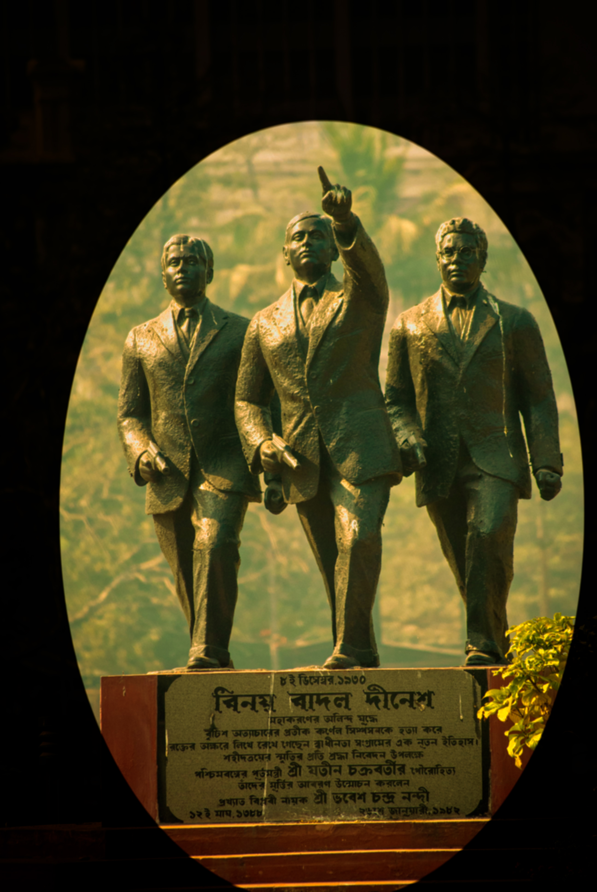

HOME
Writer's Building
The secretariat building of the State Government, is haunted by spirits of the dead.
You can’t find a single living soul working here after sunset. The reason being that the most powerful building of the city is also a member of the most haunted places checklist.
Writer’s Building is one of the centers of power in Kolkata and many important duties of the West Bengal State Government are carried out here. However, this heritage building is also said to be haunted.
Writer’s Building gets its reputation as one of the famous haunted places in Kolkata owing to alleged sightings of apparitions, caretakers and other staff reporting strange sights and sounds and the sometimes violent history of this old official building.

This 300-old heritage building was once the seat of administration of the West Bengal Government, till it was recently shifted to Nabanna. The Writers’ Building is historically famous for being the place where the legendary freedom fighters (Binay, Badal, and Dinesh) had killed Captain Simpson, who served the British empire. It is a known fact that nobody wishes to stay back here after the sun sets. Why? Strangely enough, the empty rooms come alive as the darkness sets in and are full of supernatural happenings and flesh-tingling screams. No caretaker has been able to last here beyond a month as the ominous atmosphere has eventually taken a toll on their sanity. Indeed, this is not for the faint-hearted.
There are many huge and vacant rooms inside the building; unutilized hence quite eerie. Workers refuse to do night shifts, but is the ghost scare just an excuse? Well, who’s ready to take chances with that.
Night guards and food vendors on the adjacent pavements have heard desperate cries from the building late in the evening.
THE END
Thanks,
Feel The Fear